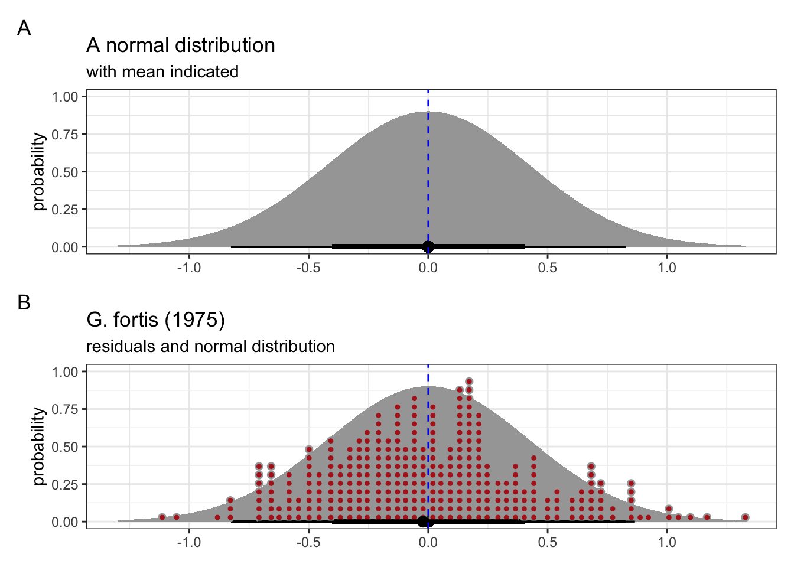
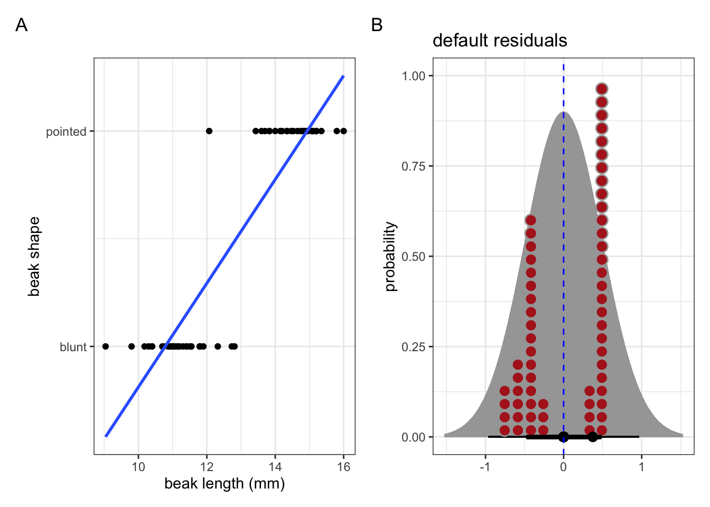
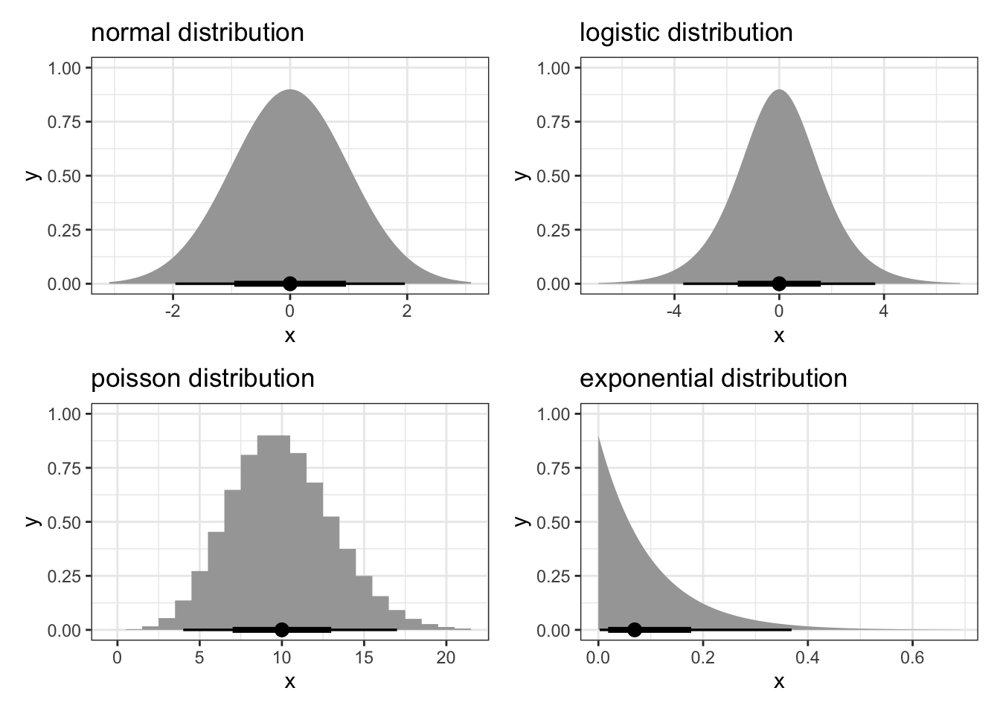
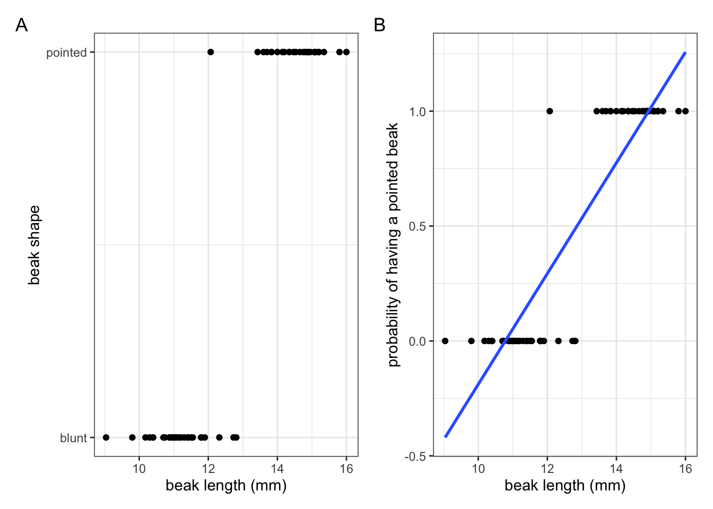
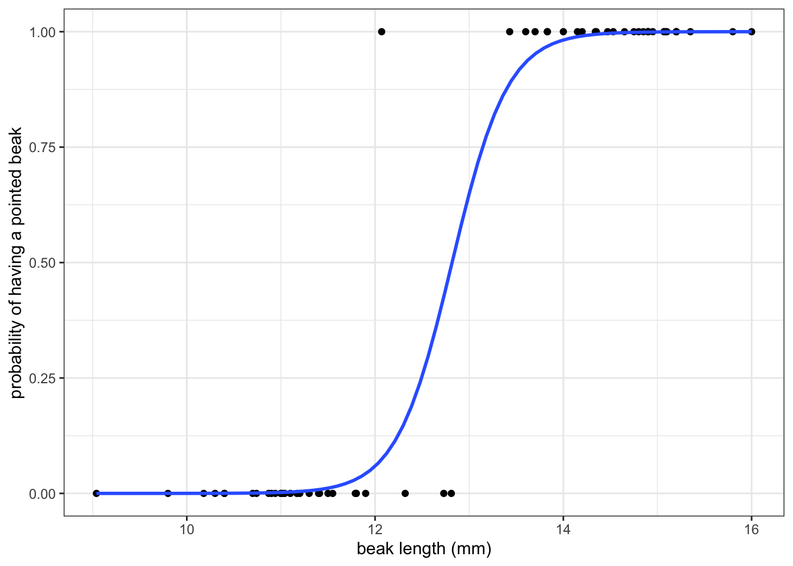

5 Generalising your model
5.1 Putting the “G” into GLM
In the previous linear model example all the assumptions were met. But what if we have data where that isn’t the case? For example, what if we have data where we can’t describe the relationship between the predictor and response variables in a linear way?
One of the ways we can deal with this is by using a generalised linear model, also abbreviated as GLM. In a way it’s an extension of the linear model we discussed in the previous section. As with the normal linear model, the predictor variables in the model are in a linear combination, such as:
\[ \beta_0 + \beta_1X_1 + \beta_2X_2 + \beta_3X_3 + ... \]
Here, the \(\beta_0\) value is the constant or intercept, whereas each subsequent \(\beta_i\) is a unique regression coefficient for each \(X_i\) predictor variable. So far so good.
However, the GLM makes the linear model more flexible in two ways:
Important
- In a standard linear model the linear combination (e.g. like we see above) becomes the predicted outcome value. With a GLM a transformation is specified, which turns the linear combination into the predicted outcome value. This is called a link function.
- A standard linear model assumes a continuous, normally distributed outcome, whereas with GLM the outcome can be both continuous or integer. Furthermore, the outcome does not have to be normally distributed. Indeed, the outcome can follow a different kind of distribution, such as binomial, Poisson, exponential etc.
We’ll introduce each of these elements below, then illustrate how they are used in practice, using different types of data.
The link function and different distributions are closely…err, linked. To make sense of what the link function is doing it’s useful to understand the different distributional assumptions. So we’ll start with those.
5.2 Distributions
In the examples of a standard linear model we’ve seen that the residuals needed to be normally distributed. We’ve mainly used the Q-Q plot to assess this assumption of normality.
But what does “normal” actually mean? It assumes that the residuals are coming from a normal or Gaussian distribution. This distribution has a symmetrical bell-shape, where the centre is the mean, and half of the data are on either side of this.
We can see this in Figure 5.1. The mean of the normal distribution is indicated with the dashed blue line.
We can use the linear model we created previously, where we looked at the possible linear relationship between beak depth and beak length. This is based on measurements of G. fortis beaks in 1975.
The individual values of the residuals from this linear model are shown in Figure 5.1, panel B (in red), with the corresponding theoretical normal distribution in the background. We can see that the residuals follow this distribution reasonably well, which matches our conclusions from the Q-Q plot (see Figure 4.6).
All this means is that assuming that these residuals may come from a normal distribution isn’t such a daft suggestion after all.
Now look at the example in Figure 5.2. This shows the classification of beak shape for a number of finches. Their beaks are either classed as blunt or pointed. Various (continuous) measurements were taken from each bird, with the beak length shown here.

We’ll look into this example in more detail later. For now it’s important to note that the response variable (the beak shape classification) is not continuous. Here it is a binary response (blunt or pointed). As a result, the assumptions for a regular linear model go out of the window. If we were foolish enough to fit a linear model to these data (see blue line in A), then the residuals would look rather non-normal (Figure 5.2 B).
So what do we do? Well, the normal distribution is not the only one there is. In Figure 5.3 there are a few examples of distributions (including the normal one).

Different distributions are useful for different types of data. For example, a logistic distribution is particularly useful in the context of binary or proportional response data. The Poisson distribution is useful when we have count data as a response.
In order to understand how this can help us, we need to be aware of two more concepts: linear predictors and link functions.
5.3 Linear predictors
The nice thing about linear models is that the predictors are, well, linear. Straight lines make for easy interpretation of any potential relationship between predictor and response.
As mentioned before, predictors are in the form of a linear combination, where each predictor variable is multiplied by a coefficient and all the terms are added together:
\[ \beta_0 + \beta_1X_1 + \beta_2X_2 + \beta_3X_3 + ... \]
Fortunately, this is no different for generalised linear models! We still have a linear combination but, as we’ll see, if the relationship is not linear then we need an additional step before we can model the data in this way.
At this point, we have two options at our disposal (well, there are more, but let’s not muddy the waters too much).
Important
- Transform our data and use a normal linear model on the transformed data
- Transform the linear predictor
The first option, to transform our data, seems like a useful option and can work. It keeps things familiar (we’d still use a standard linear model) and so all is well with the world. Up to the point of interpreting the data. If we, for example, log-transform our data, how do we interpret this? After all, the predictions of the linear model are directly related to the outcome or response variable. Transforming the data is usually done so that the residuals of the linear model resemble a more normal distribution. An unwanted side-effect of this is that this also changes the ratio scale properties of the measured variables [@stevens1946].
The second option would be to transform the linear predictor. This enables us to map a non-linear outcome (or response variable) to a linear model. This transformation is done using a link function.
5.4 Link functions
Simply put: link functions connect the predictors in our model to the response variables in a linear way.
However, and similar to the standard linear model, there are two parts to each model:
- the coefficients for each predictor (linking each parameter to a predictor)
- the error or random component (which specifies a probability distribution)
Which link function you use depends on your analysis. Some common link functions and corresponding distributions are (adapted from [@glen2021]):
| distribution | data type | link name |
|---|---|---|
| binomial | binary / proportion | logit |
| normal | any real number | identity |
| poisson | count data | log |
Let’s again look at the earlier example of beak shape.

We’ve seen the data in Figure 5.4 A before, where we had information on what beak shape our observed finches had, plotted against their beak length.
Let’s say we now want to make some predictions about what beak shape we would expect, given a certain beak length. In this scenario we’d need some way of modelling the response variable (beak shape; blunt or pointed) as a function of the predictor variable (beak length).
The issue we have is that the response variable is not continuous, but binary! We could fit a standard linear model to these data (blue line in Figure 5.2 A) but this is really bad practice. Why? Well, what such a linear model represents is the probability - or how likely it is - that an observed finch has a pointed beak, given a certain beak length (Figure 5.4 B).
Simply fitting a linear line through those data suggests that it is possible to have a higher than 1 and lower-than-zero probability that a beak would be pointed! That, of course, makes no sense. So, we can’t describe these data as a linear relationship.
Instead, we’ll use a logistic model to analyse these data. We’ll cover the practicalities of how to do this in more detail in a later chapter, but for now it’s sufficient to realise that one of the ways we could model these data could look like this:

Using this sigmoidal curve ensures that our predicted probabilities do not exceed the \([0, 1]\) range.
Now, what happened behind the scenes is that the generalised linear model has taken the linear predictor and transformed it using the logit link function. This links the non-linear response variable (beak shape) to a linear model, using beak length as a predictor.
We’ll practice how to perform this analysis in the next section.
5.5 Summary
Key points
- GLMs allow us to map a non-linear outcome to a linear model
- The link function determines how this occurs, transforming the linear predictor